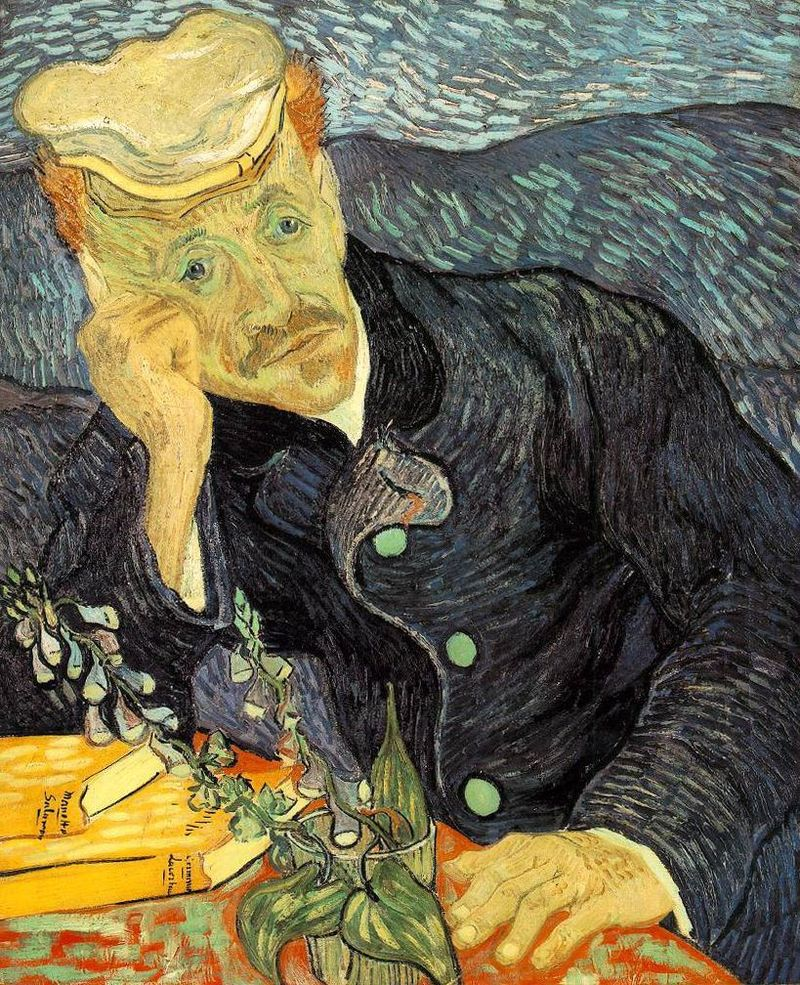
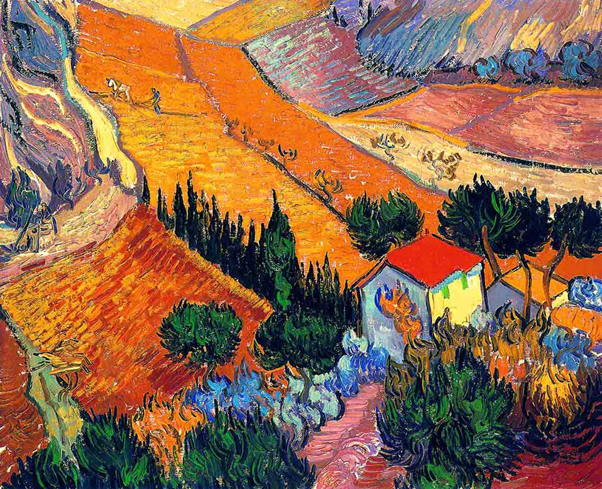
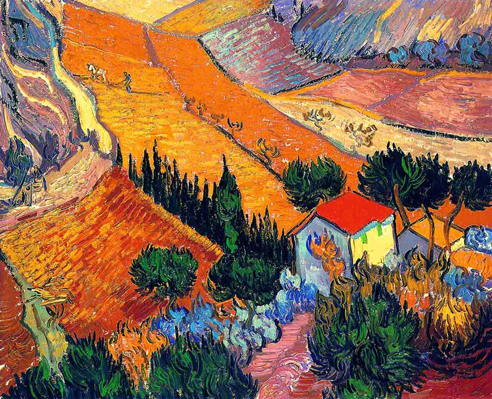
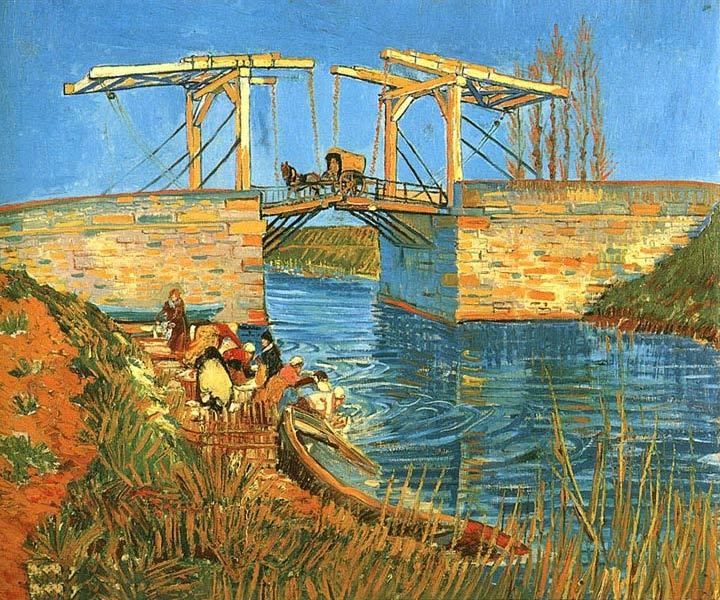
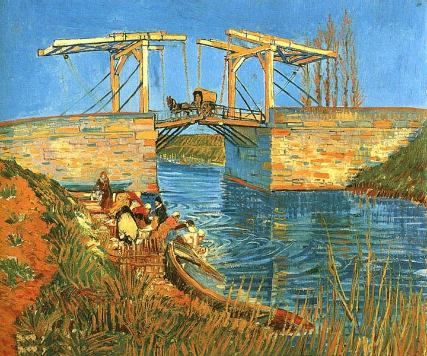

Vincent van Gogh
Biography
Vincent Willem van Gogh -
(30 March 1853 – 29 July 1890)
was a Dutch Post-Impressionist painter whose work had a far-reaching influence on 20th-century art. In just over a decade he produced over 2100 artworks, including around 860 oil paintings. They include portraits, self portraits, landscapes, still lifes, olive trees, cypresses, wheat fields and sunflowers. He was largely unnoticed by critics until his suicide, aged 37, following years of anxiety, poverty and mental illness.
Read more...
(30 March 1853 – 29 July 1890)
was a Dutch Post-Impressionist painter whose work had a far-reaching influence on 20th-century art. In just over a decade he produced over 2100 artworks, including around 860 oil paintings. They include portraits, self portraits, landscapes, still lifes, olive trees, cypresses, wheat fields and sunflowers. He was largely unnoticed by critics until his suicide, aged 37, following years of anxiety, poverty and mental illness.
Read more...
The most expencive van Gogh artwork
ONE OF THE PORTRAITS BROKE AUCTION HOUSE RECORDS. It took only three minutes for Christie's to sell the original Portrait of Dr. Gachet, which actually boasts van Gogh's signature. Selling for $82.5 million, it set a new record for highest price paid for a painting.

15 Interesting facts about Portrait of Dr. Gachet artwork
Over the years, Portrait of Dr. Gachet has become one of Vincent van Gogh's most recognizable works. But beneath the brushstrokes, there may be a mystery of jealousy, fraud, and the death of a legend.
1. THERE ARE TWO PORTRAITS.
Both are called Portrait of Dr. Gachet and feature the same costume, melancholy expression, and head on hand pose. (However, they do include slightly different props.) Their canvasses are virtually the same size (26.4 inches by 22.4 inches) and they were both painted in 1890, the final year of van Gogh's life. Read more...
Arts
 
 
